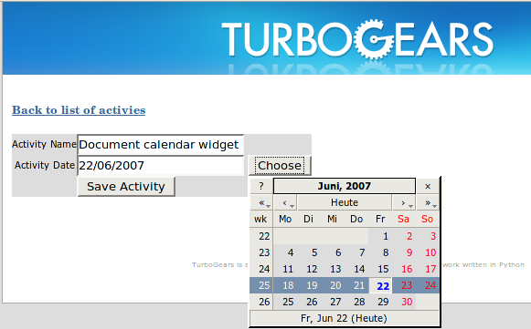

Contents
The CalendarDatePicker widget implements a form filed for entering a date and a button, which opens a JavaScript driven date selector.
Using the calendar widget in a form is pretty straight forward:
First you need to create a field list:
from turbogears import validators, controllers, expose, validate, error_handler
from turbogears.widgets import WidgetsList, TextArea, CalendarDatePicker, \
TableForm
import turbogears
class form_fields(WidgetsList):
'''A list of fields for our example form'''
some_text = summary_field = TextArea(
label = _('Some Text'),
name = 'some_text',
default = 'Some Text Here')
some_date = CalendarDatePicker(
label = _('Some Date'),
name = 'some_date',
calendar_lang = 'fr',
format = '%d/%m/%Y',
validator = validators.DateTimeConverter(format="%d/%m/%Y"))
The field list contains two fields: a TextArea field named some_text and a CalendarDatePicker field named some_date.
Then we have to instantiate the form:
my_form = TableForm(
'some_form_name',
fields = form_fields(),
action = tg.url('post_handler'),
submit_text = _('Submit the date and text'))
and then return the form from your controller method and insert into your template as usual.
Now it’s time to decorate the action handler (post_handler here) so we validate the received date is correct and in the time range we want:
@expose()
@error_handler(method_that_exposes_the_form)
@validate(form=my_form)
@validate(validators={'some_date': validators.DateValidator(after_now=True)})
def post_handler(self, some_text, some_date):
"""Action handler for our http form"""
turbogears.redirect('/thetestpassedok')
Note that an error_handler decorator has been added that points to the method the exposes the actual form. The first validate will run the validators that we have defined directly on the form (the conversion). The second validator will make sure that the received date is strictly in the future compared to today. It is also possible to pass:
today_or_after=True
as a parameter to the validator. With this the validator will accept as valid date that are today or in the future.
If an error occurs during the form validation, the browser will be automatically redirected to the error_handler that has been specified. If the error_handler is (like in our example) the method that exposes the form, then the values entered will not be lost and a small message indicating the error will have been added beside the faulty entry.
You can download an example TurboGears project which shows the CalendarDatePicker widget in action: